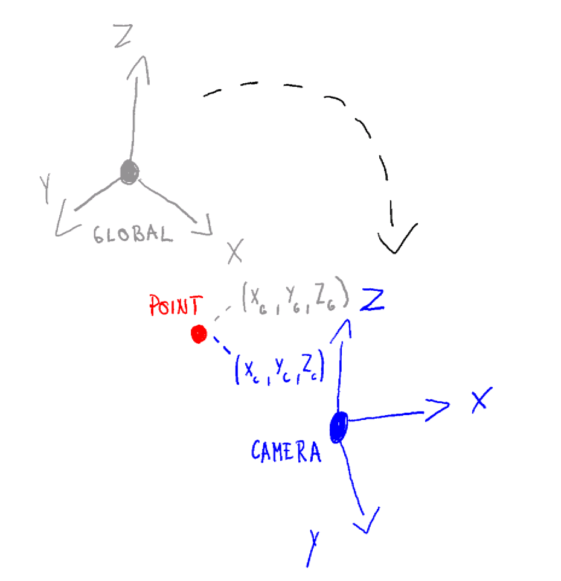

Understanding Camera Coordinate Transformations
In modern computer graphics and computer vision, it's essential to convert points from a global (world) coordinate system into a camera's local coordinate system. This is accomplished by a combination of translation and rotation, conveniently packaged into a single homogeneous transformation matrix. In this post, we'll derive that matrix step by step and show how it acts on a point.
Table of Contents
- Understanding Camera Coordinate Transformations
- Table of Contents
- Glossary
- 1. The Problem Statement
- 2. Translating the Origin
- 3. Rotating into Camera Axes
- 4. The Combined View Matrix
- 5. Conclusion
- References
Glossary
- World Coordinate System: Global reference frame where all objects and the camera are initially defined.
- Camera Coordinate System: Local reference frame centered at the camera's optical center with axes aligned to the camera's orientation.
- Optical Center: The 3D position of the camera in world coordinates; the origin of the camera's local frame.
- Homogeneous Coordinates: Extended coordinate system where a 3D point is represented as a 4D vector with an added dimension (typically 1), enabling matrix operations for both rotation (possible before) and translation (added).
- Orthonormal Basis: A set of three perpendicular unit vectors that define the camera's orientation axes (u, v, w).
- View Matrix: A single 4×4 transformation matrix that combines translation and rotation to convert world coordinates to camera coordinates.
- Basis Change: The mathematical process of expressing a point's coordinates in a different coordinate system through projection onto the new basis vectors.

1. The Problem Statement
$P_{\text{global}} = \begin{pmatrix}x_g\\y_g\\z_g\end{pmatrix}$ are coordinates of a randomly picked point in the world frame.
The camera's optical center has coordinates $C = \begin{pmatrix}x_c\\y_c\\z_c\end{pmatrix}$
The camera's orientation is given by an orthonormal basis of three unit vectors (in world coordinates):
$ \mathbf u = \begin{pmatrix}u_x\\u_y\\u_z\end{pmatrix},\quad\mathbf v = \begin{pmatrix}v_x\\v_y\\v_z\end{pmatrix},\quad\mathbf w = \begin{pmatrix}w_x\\w_y\\w_z\end{pmatrix} $
We want one matrix M such that the homogeneous product produces the point’s coordinates in the camera’s local frame.
$M \;\begin{pmatrix} P_{\text{global}} \\ 1 \end{pmatrix} = \begin{pmatrix} P_{\text{camera}} \\ 1 \end{pmatrix}$
2. Translating the Origin
First, we translate the world so that the camera center goes to the origin.
In homogeneous form, this is the matrix
$T = \begin{pmatrix} 1 & 0 & 0 & -x_c \\ 0 & 1 & 0 & -y_c \\ 0 & 0 & 1 & -z_c \\ 0 & 0 & 0 & 1 \end{pmatrix}$
Applying $T$ to $P_{\text{global}}^h=\begin{pmatrix}x\\y\\z\\1\end{pmatrix}$ yields:
$ T\,\begin{pmatrix}x\\y\\z\\1\end{pmatrix}=\begin{pmatrix}x - x_c\\[4pt]y - y_c\\[4pt]z - z_c\\[4pt]1\end{pmatrix} $
VISUAL EXAMPLES OF TRANSLATIONS
3. Rotating into Camera Axes
Now the camera center is at the origin, but the axes are still aligned with the world. So next, we need to rotate the translated point so that the world axes align with the camera's axes . The homogeneous rotation matrix for this is:
$R_h = \begin{pmatrix} u_x & u_y & u_z & 0 \\ v_x & v_y & v_z & 0 \\ w_x & w_y & w_z & 0 \\ 0 & 0 & 0 & 1 \end{pmatrix}$
Multiplying by this matrix transforms the point into camera‐coordinate space:
$ R_h\begin{pmatrix}x - x_c \\[2pt]y - y_c \\[2pt]z - z_c \\[2pt]1\end{pmatrix}=\begin{pmatrix}\mathbf U \cdot (p_{\mathrm{global}} - c) \\[4pt]\mathbf V \cdot (p_{\mathrm{global}} - c) \\[4pt]\mathbf W \cdot (p_{\mathrm{global}} - c) \\[4pt]1\end{pmatrix} $
Equivalently, the resulting coordinates are
$ \begin{aligned} x_{\mathrm{cam}} &= u_x(x - x_c) + u_y(y - y_c) + u_z(z - z_c),\\ y_{\mathrm{cam}} &= v_x(x - x_c) + v_y(y - y_c) + v_z(z - z_c),\\ z_{\mathrm{cam}} &= w_x(x - x_c) + w_y(y - y_c) + w_z(z - z_c).\end{aligned} $
Why this works?
With this process we are projecting essentially the positional vector for point P onto camera orthonormal basis vectors. Answering the question, how much the point p moves in the directions of camera defining vectors u, v, w
This is called a basis change and we are doing it through projection. Read more on this topic here: Change of Basis
4. The Combined View Matrix
Combining translation then rotation into one multiplication gives:
$ M = R_h \, T= \begin{pmatrix} u_x & u_y & u_z & -\,(u_x X_C + u_y Y_C + u_z Z_C) \\ v_x & v_y & v_z & -\,(v_x X_C + v_y Y_C + v_z Z_C) \\ w_x & w_y & w_z & -\,(w_x X_C + w_y Y_C + w_z Z_C) \\ 0 & 0 & 0 & 1\end{pmatrix}. $
That single matrix now both recenters and reorients any world point into camera space.
5. Conclusion
In summary, to transform a world‐space point into camera‐space:
- Translate by so the camera is at the origin.
- Rotate by to align with the camera axes.
Pack those into the homogeneous "view" matrix:
$ M = \begin{pmatrix}R & -R\,C\\0\;0\;0 & 1\end{pmatrix}, $
and apply:
$ \begin{pmatrix}P_{\text{camera}}\\1\end{pmatrix}= M\,\begin{pmatrix}P_{\text{global}}\\1\end{pmatrix}. $
With this matrix in hand, you have the foundation for projecting 3D scenes onto a 2D camera image, performing view frustum culling, and more advanced rendering and vision algorithms. Happy coding!